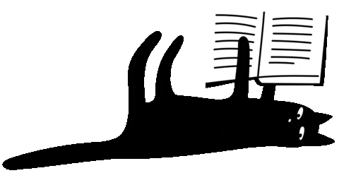

Temperament
The Russian blue is a sweet-tempered, loyal cat who will follow her owner everywhere, so don't be surprised if she greets you at the front door! While she has a tendency to attach to one pet parent in particular, she demonstrates affection with her whole family and demands it in return.
It's said that Russian blues train their owners rather than the owners training them, a legend that's been proven true time and again.
They are very social creatures but also enjoy alone time and will actively seek a quiet, private nook in which to sleep. They don't mind too much if you're away at work all day, but they do require a lot of playtime when you are home.
Russian blues tend to shy away from visitors and may hide during large gatherings.
They typically get along with kids and other animals, including other cats and the family dog—and despite their affectionate nature, they are calm and not at all clingy. That said, while these sensitive lapcats enjoy being with their people, they can become uncomfortable or withdrawn around strangers.
Russian blues can be very vocal, but are generally soft-spoken and will talk in quiet meows to let you know they need food, water, or attention.
This breed is super smart, independent, active, and energetic. Russian blues love to play (so make sure to stock up on cat toys!) but they get calmer with age.